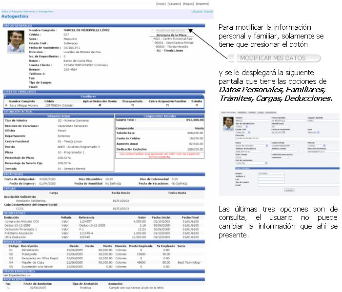
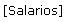
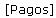

En esta opción el usuario puede consultar toda la información relacionada con su expediente laboral y con los salarios que le han sido devengados. Además puede modificar su información personal y sus datos familiares.


En esta opción el usuario puede ver su historial de cambios salariales en forma gráfica desde que ingreso a la empresa hasta la actualidad.
En esta pantalla se observa el gráfico de variación de los registros que se despliegan en ella, tomando en cuenta la relación de la fecha en que rige el salario, con respecto al monto de dicho salario:
También si se quiere ver el desglose del monto del salario, o ver que elementos lo componen, solamente basta con hacer click encima del registro deseado y el sistema desplegará la información en forma gráfica, y porcentual de cada uno de los componentes, como lo muestra la siguiente pantalla:


Aquí el usuario podrá observar el historial de pagos realizados en la empresa. Se muestra el desglose del cálculo de la nómina, según el periodo seleccionado.

Al presionar un registro de la lista se muestra el detalle de las cargas, las deducciones, las incidencias, etc.

 Si se presiona este link,
el sistema manda automáticamente la información desplegada en pantalla,
al correo electrónico del usuario y corresponde al detalle de los pagos
de una nómina en particular que cualquiera de los empleados ha percibido.
Si se presiona este link,
el sistema manda automáticamente la información desplegada en pantalla,
al correo electrónico del usuario y corresponde al detalle de los pagos
de una nómina en particular que cualquiera de los empleados ha percibido.
Al presionar este icono se despliega una pantalla con una breve descripción de cada uno de los apartados de la información detallada de la pantalla anterior. A continuación se muestra dicha información:
Salarios:
Corresponde al pago de los salarios devengados en un periodo específico. Si existen fechas con cambios de salario, se presentará la información del rango de tiempo en que se presentó dicha información como un corte en los días de pago.
Incidencias:
Corresponden al pago de conceptos extraordinarios de salarios, como pueden ser, las horas extra, pago de días festivos laborados, etc.
Cargas:
Son las deducciones de Ley que se aplican al salario. Las mismas afectan el salario líquido del funcionario, las cargas patronales se presentan como información al empleado, de los montos que debe pagar la empresa, correspondientes a las cargas de Ley.
Deducciones:
Se presenta el detalle de las deducciones aplicadas a la nómina del funcionario.
Renta:
Es el monto retenido al funcionario correspondiente al Impuesto de la Renta. En este monto se toman en cuenta los subsidios correspondientes a los cónyuges o dependientes cuando aplique.